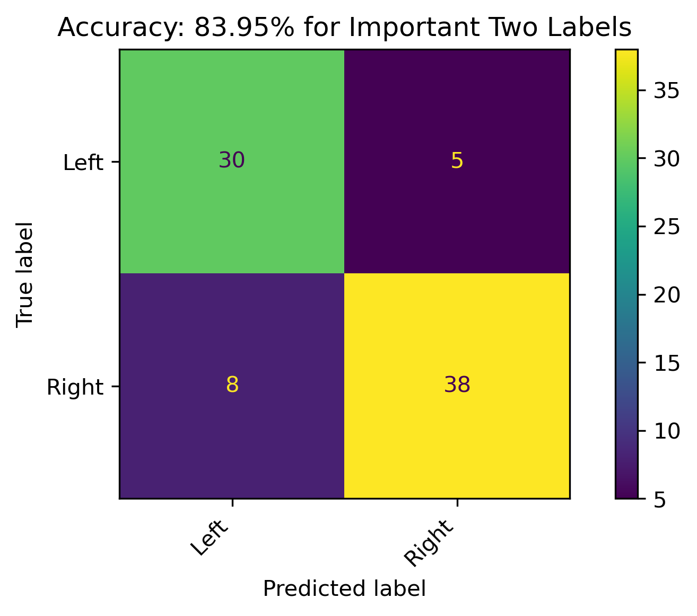

{kind=link}
| Label | mean_test_score | rank_test_score | param_criterion | param_max_depth | param_max_features | mean_fit_time |
|---|---|---|---|---|---|---|
| Loading ITables v2.2.5 from the internet... (need help?) |
Modeling - Decision Trees
Introduction
Decision Trees are a heuristic based classification model which are useful for capturing non-linear trends and patterns in data. The heuristic aspect means that it follows a set of rules to provide an answer, whereas an algorithm follows steps to provide an answer which is always optimal. The tree aspect comes from the flowchart-like structure which features nodes and branches depending on decisions calculated from the data, constructing a logical pathway for classification.
The example above, from this documentation, shows how decision trees can partition non-linear data. This is two-dimensional dataset example, but the same idea holds true for higher dimensions.

The example above, from this website, shows the flowchart like structure, illustrating how a decision can be made by splitting logically on a criteria.
Notice that this example uses both qualitative and quantitative data. Decision Trees are effective on even mixed data. In fact, given at least a single column of quantitivate data, there are an infinite number of trees that can be made depending on how the quantitiatve variables are split. In addition to an infinite number of ways to split the quantitative variables (especially continuous data), tree depth can add to the complexity of a model.
Trees can be shallow or deep, meaning the number of branches and subsequent nodes that are allowed. A tree can be split until each node is pure or even only contains a single value. Purity in a node refers to the amount of labels within it. For example, given a decision tree whose task is to model a binary label dataset, if a node contains only a single label type, it is considered pure. Investigating the purity (and impurity) of a node is how “goodness” of split is measured. How are criteria for a split formed and how does this relate to purity? The common heuristics that are used in this process are:
- Gini
- Entropy
- Information Gain
Gini and Entropy calculate the impurity of a node, and Information Gain measures the overall impurity after a split is made and either Gini or Impurity is calculated. The attribute with the highest Information Gain is chosen for the split.
This section of the analysis will specifically use Decision Tree Classification sklearn documentation.
Strategy and Goals
More specifically, Decision Trees will be used here to create models for predicting political bias from text data. Aftering training models with news article which have known political biases, these models will be applied to Reddit data to project political bias, which could be a decent indicator of sentiment towards student loan relief in online social discourse.
See the Modeling Preparation page for a detailed breakdown of the data fromatting, labels for supervised learning, and necessity for disjointness.
Hyperparameter Tuning
Due to the availability of hyperparameters within the deciison tree classifier, GridSearchCV was used to test each of the parameters for each the label aggregations. This uses the entire dataset and cross validates that, folding it into 5 different folds in this case. It essentially creates the training and testing sets during the process within the 5 different folds.
The hyperparameters tested were:
- criterion:
- gini
- entropy
- log_loss
- max_depth:
- None
- 5
- 10
- max_features:
- None
- sqrt
- log2
Hyperparameter Results
Hyperparameter Best Results
| Criterion | Max_Depth | Max_Features | Model | Accuracy |
|---|---|---|---|---|
| Loading ITables v2.2.5 from the internet... (need help?) |
Note that the combined search has rankings for each model based not only on accuracy but aspects such model fitting time. The Hyperparameter Best Results will be used for the following modeling.
Modeling
Due to the nature of decision trees, its possible to illustrate the actual node splits.
Five Labels

This model across all five labels resulted in a 55.95% accuracy. It was particularly weak in predicting Lean Right correctly. The root node of the tree was \(news \leq 1.5\).
Three Labels


When combining Lean Left and Lean Right with Left and Right, respectively, the model accuracy was just below 60%. The root node of the tree was \(fox \leq 1.5\).
Strict Three Labels

When the leaning political biases weren’t combined, the accuracy of the model had a slight increase of about 5%. The root node of the tree was \(news \leq 1.5\).
Two Labels

When combining Lean Left and Lean Right with Left and Right, respectively, and dropping the Center label, the model accuracy was almost 61%. There were still a high amount of incorrect predictions, which could be reflective on the leanings. The root node of the tree was \(required \leq 0.5\).
Strict Two Labels

When the leaning political biases weren’t combined, and dropping the the Center label, the accuracy of the model increased by almost 20% over all other models. This is a respectable model, and the best performance with the Decision Tree classification in this section. Additionally, it had the simplest tree with the root node being \(news \leq 2.5\).
Comparing Trees
The models using different subsets and aggregations of the data prodcued several different trees. Just examining the root node, \(news\) was mainly the root node. However, the last tree provided a different split value of \(2.5\) versus \(1.5\) for the others with that root node. However, the other root nodes were \(required\) and \(fox\).
Reddit Projections
To apply this model in projecting political bias on Reddit authors, feature permutation was performed on the best performing 2-Class model to obtain the most important features from the original 1000 labels. The 3-Class model had poor perfomance, so that wasn’t pursued for this section. Additionally, the important features were combined with the nodes of the tree. Subsequently:
- The models were retrained on this subset of important features.
- The Reddit count vectorized data was then reduced to these feautres.
- The models were appplied to the Reddit subset.
Feature Importance through Permutation
Two Features - Strict Two Political Biases
| feature | importance | absolute_importance | |
|---|---|---|---|
| Loading ITables v2.2.5 from the internet... (need help?) |
After combining these features with the missing features from the decision tree nodes, the new model features only 11 words.
Retrained Models
The retrained models with fewer features had roughly about the same accuracy.
Two Features

Reddit Projection Results
| Author | Predicted Bias Two | Threshold Two | Threshold | Conclusion |
|---|---|---|---|---|
| Loading ITables v2.2.5 from the internet... (need help?) |
The above illustrates the predicions for both the three and two label models as well as their probabilities. This was a strictly two-label projection onto the Reddit data and shows some decently high confidence from the model. Recall that political biases are correlated with sentiment, with the Right having a more negative sentiment and the Left having a more positive sentiment.
Conclusion
Modeling Conclusions
Please see Modeling Conclusions for a complete synthesis of the supervised machine learning models, especially concerning bias and sentiment.